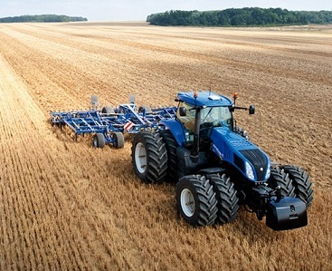
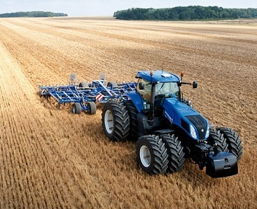

Cereale
Suprafața cultivată cu cereale pentru boabe - grâu, porumb, orz, orzoaică și ovăz - a crescut de la 5,04 milioane hectare în 2010 la 5,24 milioane hectare în anul 2011, iar producția a crescut de la 16,71 milioane tone în 2010 la 20,78 milioane tone, în anul 2011.
Prin comparație, Ucraina a obținut 39,2 milioane de tone de cereale în 2010.La nivel mondial, FAO a estimat pentru 2011 o producție de cereale de 2,3 miliarde tone, din care 674 milioane tone de grâu.
Grâu
Din punct de vedere al suprafeței cultivate, România ocupă locul patru în Europa, pe aceeași poziție cu Marea Britanie, după Franța (5,1 milioane hectare), Germania (3,2 milioane ha) și Polonia (2,3 milioane ha). Cu toate acestea, randamentul la hectar, de 2,4 tone, este la mai puțin de jumătate din randamentul mediu al Uniunii Europene. De exemplu, Danemarca a avut în 2009 o producție medie la hectar de 8,1 tone, ceea ce a plasat-o deasupra României ca producție totală, cu toate că suprafața cultivată cu grâu este de doar 740.000 de hectare. În anul 2009, România a fost pe locul 7 din punct de vedere a producției, ca urmare a randamentului, care a reprezentat mai puțin de jumătate (44,7%) din randamentul mediu al UE.
În anul 2010 producția a fost de 5,6 milioane de tone de grâu, exporturile a fost de 2,3 milioane de tone, iar importurile au fost de 685.000 tone.
Necesarul de grâu al României se situează între 3,5 și 4 milioane de tone și include consumul uman (urban, rural), cel industrial, precum și grâul de sămânță. Pentru panificație se consumă 3,5 de milioane tone de grâu. Prin comparație, în Bulgaria cererea internă este de 2,2 milioane de tone de grâu anual.
În anul 2007, peste 60% din culturile agricole au fost distruse de secetă, iar România a obținut o producție de grâu de 3 milioane de tone, fiind apreciată de specialiști drept cea mai mică din 1940.
În anul 2008, prețul cu care se comercializa tona de grâu era de 500 de lei (115 euro/tonă). Prin comparație, în anul 2003 prețul era de 200 dolari/tonă.
Porumb
În anul 2007, România era al treilea mare producător de porumb din Uniunea Europeană, după Franța și Italia și avea alocată cea mai mare suprafață pentru această cultură. În anul 2009, România avea mai mult de un sfert din suprafața cultivată cu porumb din Uniunea Europeană, adică aproape 27,5%, fiind tot pe primul loc. Împreună cu Franța, Ungaria și Italia, România avea trei sferturi din culturile de porumb european, ca suprafață. La producție totală România era pe locul 2 cu 13,8% din totalul UE și împreună cu statele respective deținea o cotă de 70% din recolte. Productivitatea a fost în România de 3,4 tone/ha, Franța - 9,1 tone/ha, Italia 8,2 tone/ha, Ungaria - 6,4 tone/ha și Bulgaria - 4,2 tone/ha. Potențialul agricol la porumb ar fi de 14-15 tone/ ha, dacă s-ar face agricultură în stil european.
În anul 2009, au fost cultivate 3.000 de hectare cu porumb modificat genetic.
Orez
Consumul de orez de pe piața românească este de circa 100.000 de tone anual, din care cea mai mare parte este importată, în principal din Egipt. În anul 1989, în România se cultivau 80.000 de hectare cu orez. În anul 2009, suprafața cultivată cu orez era de 8.000 de hectare, din care compania italiană Riso Scotti deținea 4.000 de hectare. În anul 2010, suprafața cultivată ajunsese la 12.000 de hectare, iar producția a fost de 62.000 de tone, din care 49.000 de tone au mers la export. Cu această suprafață cultivată, România a revenit în topul producătorilor de orez din Europa, fiind depășită doar de Italia (280.000 de hectare) și Spania (80.000 de hectare). România este considerată țara din Uniunea Europeană cu cel mai mare potențial de creștere în domeniul orezului, pentru că regiunea Dunării are de 20 de ori mai multe rezerve de apă decât bazinul Padului, unde se cultivă cea mai mare parte a orezului italian. Comunitatea europeană produce 75% din necesarul de orez, restul de 25% îl importă din China sau Africa. Singura țară care ar mai putea "umple" acest gol este România.
Orz
În anul 2010, suprafața cultivată cu orz a fost de 243.461 hectare iar producția de orz și orzoaică a fost de la 1,32 milioane tone.
Ovăz
În anul 2010, producția de ovăz a fost de 328.000 de tone, față de 296.000 tone în anul 2009.